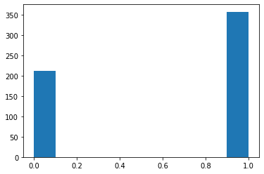

Principal Component Analysis¶
Principal components analysis (PCA) is a popular approach for deriving a low-dimensional set of features from a large set of variables.
PCA is a technique for reducing the dimension of a n × p data matrix X. The first principal component direction of the data is that along which the observations vary the most
When faced with a large set of correlated variables, principal components allow us to summarize this set with a smaller number of representative variables that collectively explain most of the variability in the original set.
[1]:
import numpy as np
import pandas as pd
import matplotlib.pyplot as plt
import seaborn as sns
PCA with Scikit-Learn¶
[2]:
from sklearn.datasets import load_breast_cancer
from sklearn.decomposition import PCA
[3]:
print(PCA.__doc__)
Principal component analysis (PCA).
Linear dimensionality reduction using Singular Value Decomposition of the
data to project it to a lower dimensional space. The input data is centered
but not scaled for each feature before applying the SVD.
It uses the LAPACK implementation of the full SVD or a randomized truncated
SVD by the method of Halko et al. 2009, depending on the shape of the input
data and the number of components to extract.
It can also use the scipy.sparse.linalg ARPACK implementation of the
truncated SVD.
Notice that this class does not support sparse input. See
:class:`TruncatedSVD` for an alternative with sparse data.
Read more in the :ref:`User Guide <PCA>`.
Parameters
----------
n_components : int, float, None or str
Number of components to keep.
if n_components is not set all components are kept::
n_components == min(n_samples, n_features)
If ``n_components == 'mle'`` and ``svd_solver == 'full'``, Minka's
MLE is used to guess the dimension. Use of ``n_components == 'mle'``
will interpret ``svd_solver == 'auto'`` as ``svd_solver == 'full'``.
If ``0 < n_components < 1`` and ``svd_solver == 'full'``, select the
number of components such that the amount of variance that needs to be
explained is greater than the percentage specified by n_components.
If ``svd_solver == 'arpack'``, the number of components must be
strictly less than the minimum of n_features and n_samples.
Hence, the None case results in::
n_components == min(n_samples, n_features) - 1
copy : bool, default=True
If False, data passed to fit are overwritten and running
fit(X).transform(X) will not yield the expected results,
use fit_transform(X) instead.
whiten : bool, optional (default False)
When True (False by default) the `components_` vectors are multiplied
by the square root of n_samples and then divided by the singular values
to ensure uncorrelated outputs with unit component-wise variances.
Whitening will remove some information from the transformed signal
(the relative variance scales of the components) but can sometime
improve the predictive accuracy of the downstream estimators by
making their data respect some hard-wired assumptions.
svd_solver : str {'auto', 'full', 'arpack', 'randomized'}
If auto :
The solver is selected by a default policy based on `X.shape` and
`n_components`: if the input data is larger than 500x500 and the
number of components to extract is lower than 80% of the smallest
dimension of the data, then the more efficient 'randomized'
method is enabled. Otherwise the exact full SVD is computed and
optionally truncated afterwards.
If full :
run exact full SVD calling the standard LAPACK solver via
`scipy.linalg.svd` and select the components by postprocessing
If arpack :
run SVD truncated to n_components calling ARPACK solver via
`scipy.sparse.linalg.svds`. It requires strictly
0 < n_components < min(X.shape)
If randomized :
run randomized SVD by the method of Halko et al.
.. versionadded:: 0.18.0
tol : float >= 0, optional (default .0)
Tolerance for singular values computed by svd_solver == 'arpack'.
.. versionadded:: 0.18.0
iterated_power : int >= 0, or 'auto', (default 'auto')
Number of iterations for the power method computed by
svd_solver == 'randomized'.
.. versionadded:: 0.18.0
random_state : int, RandomState instance, default=None
Used when ``svd_solver`` == 'arpack' or 'randomized'. Pass an int
for reproducible results across multiple function calls.
See :term:`Glossary <random_state>`.
.. versionadded:: 0.18.0
Attributes
----------
components_ : array, shape (n_components, n_features)
Principal axes in feature space, representing the directions of
maximum variance in the data. The components are sorted by
``explained_variance_``.
explained_variance_ : array, shape (n_components,)
The amount of variance explained by each of the selected components.
Equal to n_components largest eigenvalues
of the covariance matrix of X.
.. versionadded:: 0.18
explained_variance_ratio_ : array, shape (n_components,)
Percentage of variance explained by each of the selected components.
If ``n_components`` is not set then all components are stored and the
sum of the ratios is equal to 1.0.
singular_values_ : array, shape (n_components,)
The singular values corresponding to each of the selected components.
The singular values are equal to the 2-norms of the ``n_components``
variables in the lower-dimensional space.
.. versionadded:: 0.19
mean_ : array, shape (n_features,)
Per-feature empirical mean, estimated from the training set.
Equal to `X.mean(axis=0)`.
n_components_ : int
The estimated number of components. When n_components is set
to 'mle' or a number between 0 and 1 (with svd_solver == 'full') this
number is estimated from input data. Otherwise it equals the parameter
n_components, or the lesser value of n_features and n_samples
if n_components is None.
n_features_ : int
Number of features in the training data.
n_samples_ : int
Number of samples in the training data.
noise_variance_ : float
The estimated noise covariance following the Probabilistic PCA model
from Tipping and Bishop 1999. See "Pattern Recognition and
Machine Learning" by C. Bishop, 12.2.1 p. 574 or
http://www.miketipping.com/papers/met-mppca.pdf. It is required to
compute the estimated data covariance and score samples.
Equal to the average of (min(n_features, n_samples) - n_components)
smallest eigenvalues of the covariance matrix of X.
See Also
--------
KernelPCA : Kernel Principal Component Analysis.
SparsePCA : Sparse Principal Component Analysis.
TruncatedSVD : Dimensionality reduction using truncated SVD.
IncrementalPCA : Incremental Principal Component Analysis.
References
----------
For n_components == 'mle', this class uses the method of *Minka, T. P.
"Automatic choice of dimensionality for PCA". In NIPS, pp. 598-604*
Implements the probabilistic PCA model from:
Tipping, M. E., and Bishop, C. M. (1999). "Probabilistic principal
component analysis". Journal of the Royal Statistical Society:
Series B (Statistical Methodology), 61(3), 611-622.
via the score and score_samples methods.
See http://www.miketipping.com/papers/met-mppca.pdf
For svd_solver == 'arpack', refer to `scipy.sparse.linalg.svds`.
For svd_solver == 'randomized', see:
*Halko, N., Martinsson, P. G., and Tropp, J. A. (2011).
"Finding structure with randomness: Probabilistic algorithms for
constructing approximate matrix decompositions".
SIAM review, 53(2), 217-288.* and also
*Martinsson, P. G., Rokhlin, V., and Tygert, M. (2011).
"A randomized algorithm for the decomposition of matrices".
Applied and Computational Harmonic Analysis, 30(1), 47-68.*
Examples
--------
>>> import numpy as np
>>> from sklearn.decomposition import PCA
>>> X = np.array([[-1, -1], [-2, -1], [-3, -2], [1, 1], [2, 1], [3, 2]])
>>> pca = PCA(n_components=2)
>>> pca.fit(X)
PCA(n_components=2)
>>> print(pca.explained_variance_ratio_)
[0.9924... 0.0075...]
>>> print(pca.singular_values_)
[6.30061... 0.54980...]
>>> pca = PCA(n_components=2, svd_solver='full')
>>> pca.fit(X)
PCA(n_components=2, svd_solver='full')
>>> print(pca.explained_variance_ratio_)
[0.9924... 0.00755...]
>>> print(pca.singular_values_)
[6.30061... 0.54980...]
>>> pca = PCA(n_components=1, svd_solver='arpack')
>>> pca.fit(X)
PCA(n_components=1, svd_solver='arpack')
>>> print(pca.explained_variance_ratio_)
[0.99244...]
>>> print(pca.singular_values_)
[6.30061...]
[19]:
dataset = load_breast_cancer()
df = pd.DataFrame(data = dataset.data,columns=dataset.feature_names)
df['Target'] = dataset.target
df.head()
[19]:
| mean radius | mean texture | mean perimeter | mean area | mean smoothness | mean compactness | mean concavity | mean concave points | mean symmetry | mean fractal dimension | ... | worst texture | worst perimeter | worst area | worst smoothness | worst compactness | worst concavity | worst concave points | worst symmetry | worst fractal dimension | Target | |
|---|---|---|---|---|---|---|---|---|---|---|---|---|---|---|---|---|---|---|---|---|---|
| 0 | 17.99 | 10.38 | 122.80 | 1001.0 | 0.11840 | 0.27760 | 0.3001 | 0.14710 | 0.2419 | 0.07871 | ... | 17.33 | 184.60 | 2019.0 | 0.1622 | 0.6656 | 0.7119 | 0.2654 | 0.4601 | 0.11890 | 0 |
| 1 | 20.57 | 17.77 | 132.90 | 1326.0 | 0.08474 | 0.07864 | 0.0869 | 0.07017 | 0.1812 | 0.05667 | ... | 23.41 | 158.80 | 1956.0 | 0.1238 | 0.1866 | 0.2416 | 0.1860 | 0.2750 | 0.08902 | 0 |
| 2 | 19.69 | 21.25 | 130.00 | 1203.0 | 0.10960 | 0.15990 | 0.1974 | 0.12790 | 0.2069 | 0.05999 | ... | 25.53 | 152.50 | 1709.0 | 0.1444 | 0.4245 | 0.4504 | 0.2430 | 0.3613 | 0.08758 | 0 |
| 3 | 11.42 | 20.38 | 77.58 | 386.1 | 0.14250 | 0.28390 | 0.2414 | 0.10520 | 0.2597 | 0.09744 | ... | 26.50 | 98.87 | 567.7 | 0.2098 | 0.8663 | 0.6869 | 0.2575 | 0.6638 | 0.17300 | 0 |
| 4 | 20.29 | 14.34 | 135.10 | 1297.0 | 0.10030 | 0.13280 | 0.1980 | 0.10430 | 0.1809 | 0.05883 | ... | 16.67 | 152.20 | 1575.0 | 0.1374 | 0.2050 | 0.4000 | 0.1625 | 0.2364 | 0.07678 | 0 |
5 rows × 31 columns
[20]:
df.info()
<class 'pandas.core.frame.DataFrame'>
RangeIndex: 569 entries, 0 to 568
Data columns (total 31 columns):
# Column Non-Null Count Dtype
--- ------ -------------- -----
0 mean radius 569 non-null float64
1 mean texture 569 non-null float64
2 mean perimeter 569 non-null float64
3 mean area 569 non-null float64
4 mean smoothness 569 non-null float64
5 mean compactness 569 non-null float64
6 mean concavity 569 non-null float64
7 mean concave points 569 non-null float64
8 mean symmetry 569 non-null float64
9 mean fractal dimension 569 non-null float64
10 radius error 569 non-null float64
11 texture error 569 non-null float64
12 perimeter error 569 non-null float64
13 area error 569 non-null float64
14 smoothness error 569 non-null float64
15 compactness error 569 non-null float64
16 concavity error 569 non-null float64
17 concave points error 569 non-null float64
18 symmetry error 569 non-null float64
19 fractal dimension error 569 non-null float64
20 worst radius 569 non-null float64
21 worst texture 569 non-null float64
22 worst perimeter 569 non-null float64
23 worst area 569 non-null float64
24 worst smoothness 569 non-null float64
25 worst compactness 569 non-null float64
26 worst concavity 569 non-null float64
27 worst concave points 569 non-null float64
28 worst symmetry 569 non-null float64
29 worst fractal dimension 569 non-null float64
30 Target 569 non-null int64
dtypes: float64(30), int64(1)
memory usage: 137.9 KB
[21]:
plt.hist(df["Target"])
plt.show()

[ ]:
[ ]:
[ ]:
[ ]: